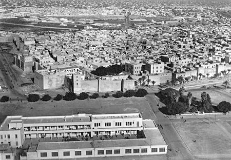
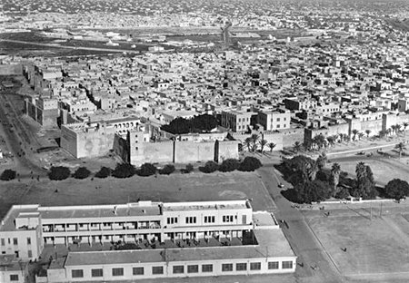
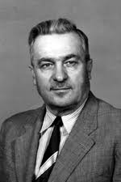

L'Institut a été fondé le 9 avril 1938 en 1931 et est considéré comme l'un des plus anciens instituts du pays. A sa création, il comptait 52 étudiants répartis en 3 départements: Mécanique générale, électricité et menuiserie.
L'Institut a été fondé le 9 avril 1938 en 1931 et est considéré comme l'un des plus anciens instituts du pays. A sa création, il comptait 52 étudiants répartis en 3 départements: Mécanique générale, électricité et menuiserie.
Il s'appelait le "Collège des Métiers" et son premier directeur fut Ferdinand Rossignol, un Français, jusqu'en 1949, puis Gilira Silana, 1956, puis Gilpinina

Parmi les dates les plus marquantes de l'institut:
1934: Le premier groupe de récipiendaires de compétences industrielles est diplômé. Certificat d’aptitude industrielle
1944: Son nom devient "École technique".
1956: première classe de baccalauréat (première étape)
1961: première promotion avec un diplôme de baccalauréat (deuxième degré)
1962: L'institut devient mixte
1965: Ajout d'une résidence pour l'institut et d'une aile scientifique
1977: Son nom devient Institut technique, le 9 avril 1938
1995: Le lycée est nommé le 9 avril 1938